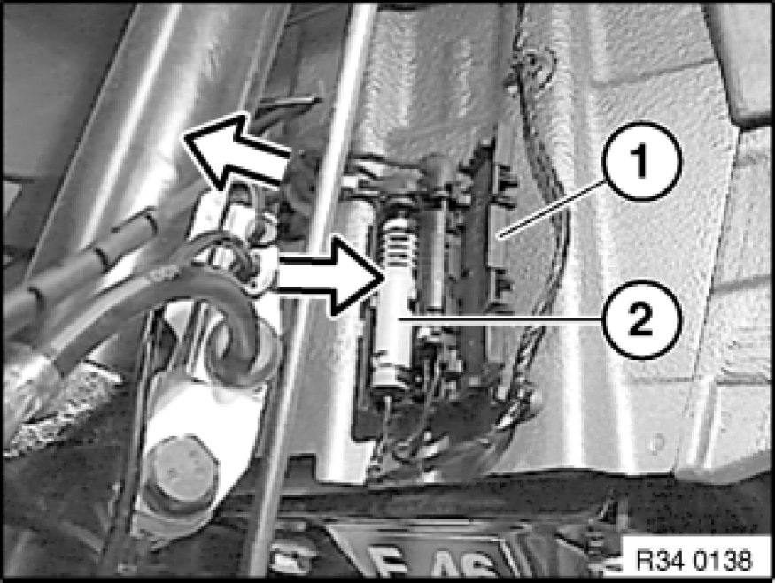
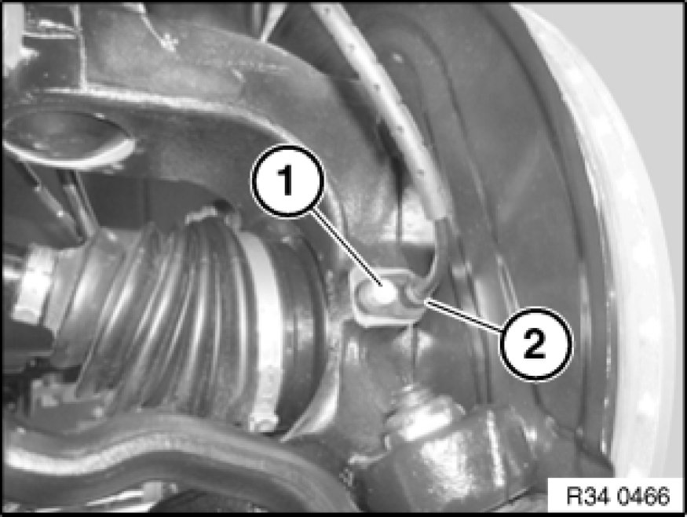

Replacing One Front Pulse Generator
34 52 525 - Replacing one front pulse generator

Important!
Read and comply with notes on protection against electrostatic damage (ESD protection) 61 35 ... Notes on ESD Protection (Electro Static Discharge).

Read and comply with General Information Service and Repair.

Open plug housing (1), pull plug connection (2) out of fixture and disconnect.
Pull cable with rubber grommet out of fixture on spring strut and on body.
Installation Note:
Ensure proper locking of plug connector and proper seating of rubber grommets.

Release socket head cap screw (1).
Withdraw pulse generator (2) from bore.
Installation Note:
Tightening torque 34 51 6AZ 34 51 Slip Control System (ABS, ASC+T, DSC).
Clean bore hole for pulse generator and grease with Staburags NBU 12/K lubricating grease (refer to BMW Service Operating Fluids).